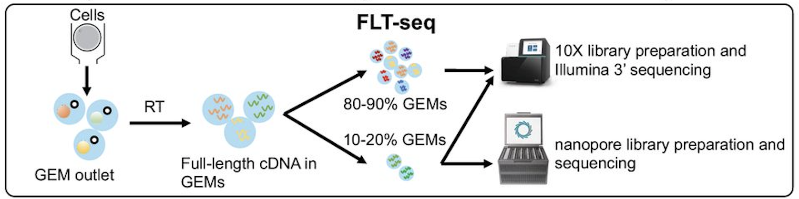
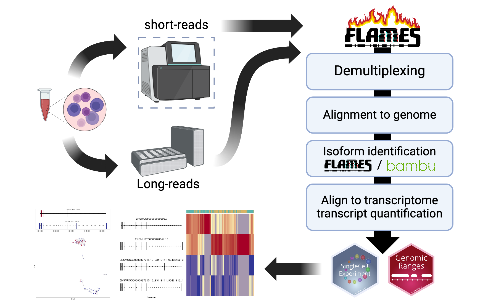
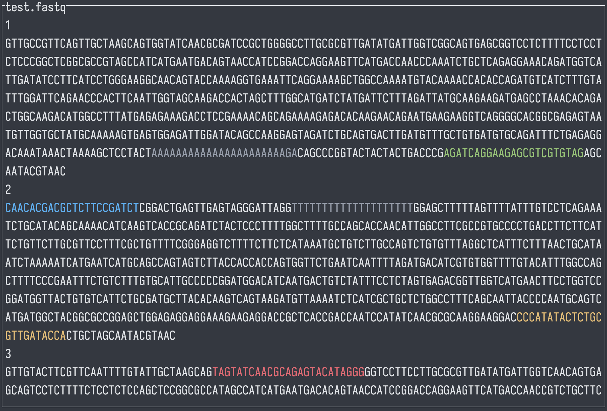
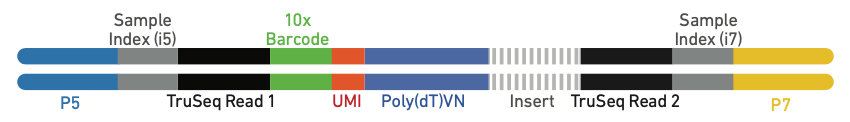
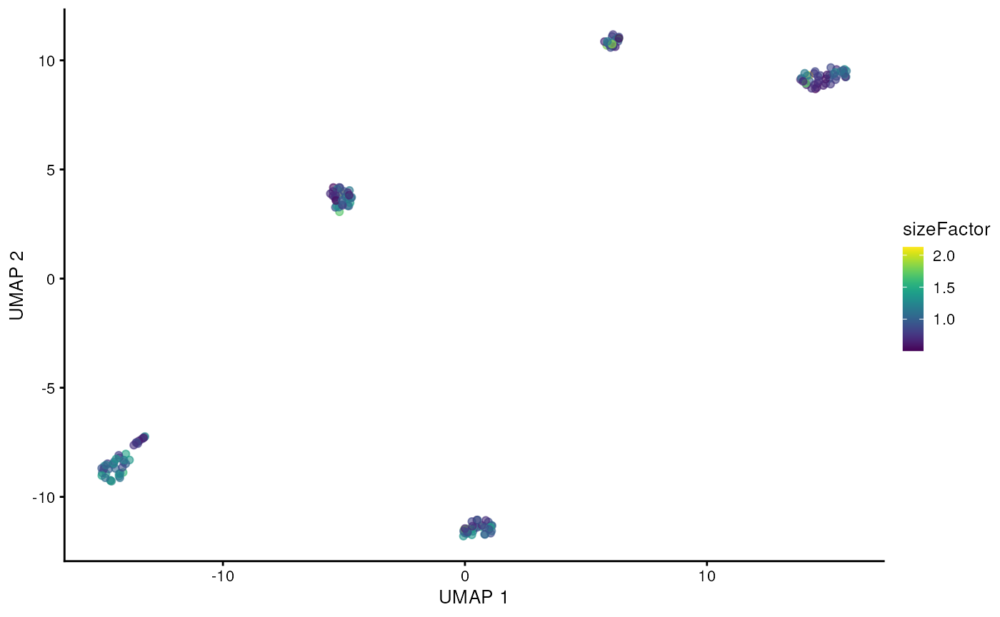
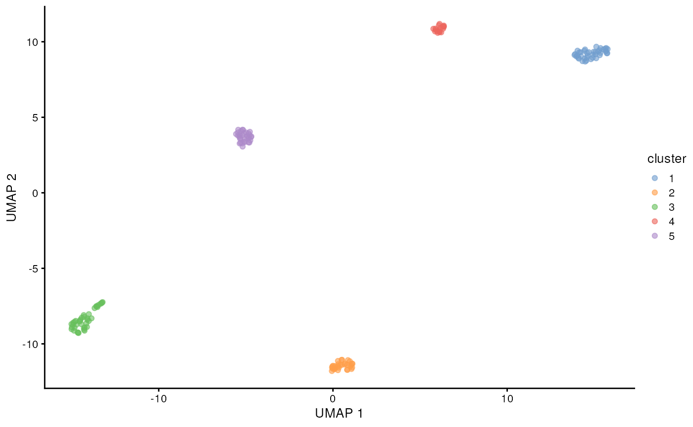
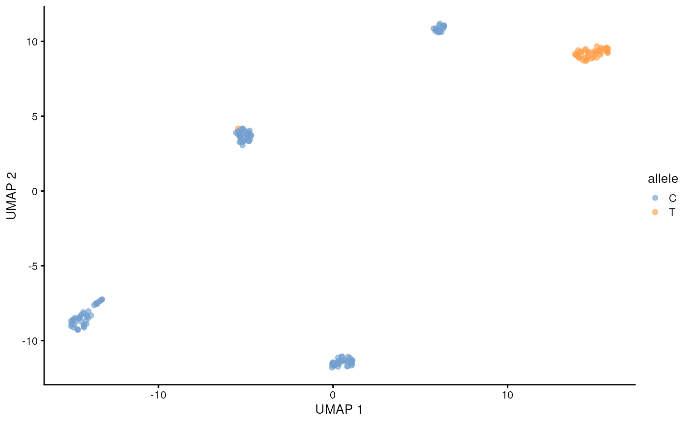
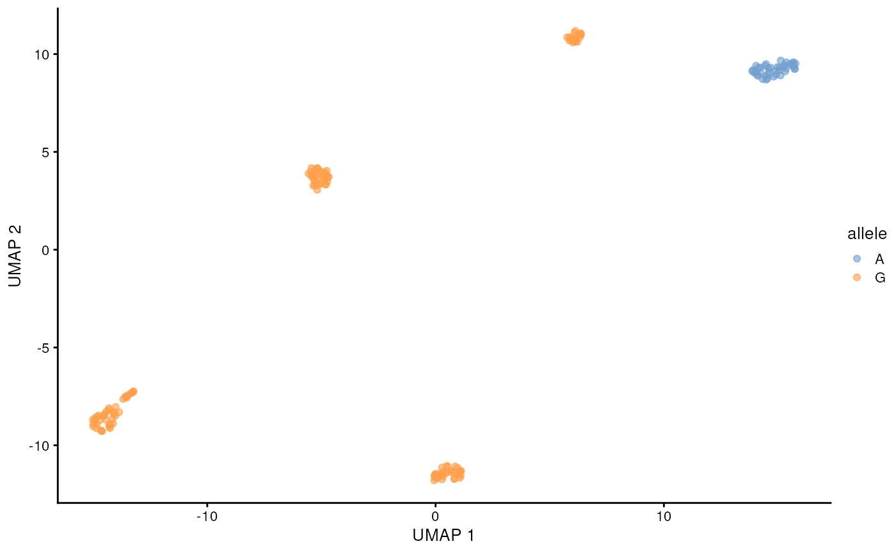
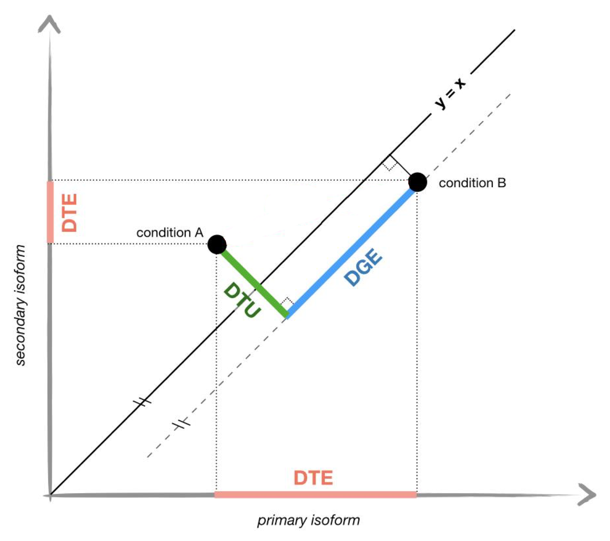

Igniting full-length isoform and mutation analysis of single-cell RNA-seq data with FLAMES
Changqing Wang
The Walter and Eliza Hall Institute of Medical Research16 July 2024
FLAMESWorkflow.RmdAbstract
In this vignette, we will walk through the FLAMES
single-cell pipeline, from de-multiplexing raw FASTQ files to
identifying and quantifying transcripts. We then perform analysis
including single nucleotide polymorphism (SNP), differential transcript
expression analysis and differential transcript usage analysis. We will
use the cell line mixture data from Tian et al. (Tian et
al., 2021-11-11).
Introduction
While the popular single-cell kits allows profiling the transcriptome of up to 10,000 cells (What is the maximum number of cells that can be profiled?) at once, the traditional short-read sequencing (100-200 nts) limits our ability to unambiguously profile isoform expression and mutations. To overcome this issue, we can combine long-read sequencing with existing single-cell kits.
Though long-read sequencing can provide read lengths several orders of magnitude larger than the typical short-read sequencing, it comes at much steeper cost and lower throughput, to accommodate this, we profile a smaller sub-sample of cells in our FLT-seq protocol(Tian et al., 2021-11-11): 
There are also many other protocols that combine single-cell with long-read sequencing, including scRaCH-seq which profiles gene panel (Peng et al., 2024-01-30), LR-Split-seq which uses combinatorial barcoding and does not require microfluidic equipments (Rebboah et al., 2021-10-07).
Set-up
if (!file.exists("~/filtered_sorted.bam") | !file.exists("~/filtered_sorted.bam.bai")) {
options(timeout = max(600, getOption("timeout")))
download.file("https://zenodo.org/records/12751214/files/filtered_sorted.bam?download=1", "filtered_sorted.bam", mode = 'wb')
download.file("https://zenodo.org/records/12751214/files/filtered_sorted.bam.bai?download=1", "filtered_sorted.bam.bai", mode = 'wb')
bam <- "filtered_sorted.bam"
} else {
bam <- path.expand("~/filtered_sorted.bam")
}
if (!file.exists("~/subset_GRCh38.fa")) {
download.file("https://ftp.ebi.ac.uk/pub/databases/gencode/Gencode_human/release_47/GRCh38.primary_assembly.genome.fa.gz", "GRCh38.primary_assembly.genome.fa.gz", mode = 'wb')
genome <- Biostrings::readDNAStringSet("GRCh38.primary_assembly.genome.fa.gz")
names(genome) <- sapply(names(genome), function(x) strsplit(x, " ")[[1]][1])
chr19 <- genome[genome$names == "chr19"]
Biostrings::writeXStringSet(chr19, "~/subset_GRCh38.fa")
}
fa <- path.expand("~/subset_GRCh38.fa")
if (!file.exists("~/sce_lib10.qs") | !file.exists("~/sce_lib90.qs")) {
download.file("https://zenodo.org/records/12770737/files/sce_lib10.qs?download=1", "sce_lib10.qs", mode = 'wb')
download.file("https://zenodo.org/records/12770737/files/sce_lib90.qs?download=1", "sce_lib90.qs", mode = 'wb')
sce_lib10 <- qs::qread("sce_lib10.qs")
sce_lib90 <- qs::qread("sce_lib90.qs")
} else {
sce_lib10 <- qs::qread("~/sce_lib10.qs")
sce_lib90 <- qs::qread("~/sce_lib90.qs")
}
FLAMES pipeline

Read pre-processing
The FLAMES pipeline starts with de-multiplexing the
FASTQ reads, i.e. identifiying the cell barcode. For protocols that use
the 10x single-cell kits, the raw reads will look like the following,
where the 10x adapter sequences and polyT tails are highlighted. 

FLAMES will locate the cell barcode by locating the
adjacent adapter sequences , and match the barcode against an allow-list
(if it is provided). We can specify the above 10x 3’ protocol as
follows:
protocol_pattern <- c(
primer = "CTACACGACGCTCTTCCGATCT",
BC = "NNNNNNNNNNNNNNNN",
UMI = "NNNNNNNNNNNN",
polyT = "TTTTTTTTT"
)Note that the order has to be the same as they appear in the
protocol. The names can be arbitrary for each sequence, but the names
UMI and BC are required .
Let’s try de-multiplexing a couple reads with
FLAMES::find_barcode:
outdir <- tempfile()
dir.create(outdir)
# prepare a barcode allow-list
bc_allow <- file.path(outdir, "bc_allow.tsv")
R.utils::gunzip(
filename = system.file("extdata/bc_allow.tsv.gz", package = "FLAMES"),
destname = bc_allow, remove = FALSE
)
find_barcode(
# raw fastq file to be de-multiplexed
fastq = system.file("extdata/fastq", package = "FLAMES"),
# outputs
stats_out = file.path(outdir, "bc_stat"),
reads_out = file.path(outdir, "demultiplexed.fq"),
barcodes_file = bc_allow,
pattern = protocol_pattern, # our protocol pattern
threads = 1
)## FLEXIPLEX 0.96.2
## Setting max barcode edit distance to 2
## Setting max flanking sequence edit distance to 8
## Setting read IDs to be replaced
## Setting number of threads to 1
## Search pattern:
## primer: CTACACGACGCTCTTCCGATCT
## BC: NNNNNNNNNNNNNNNN
## UMI: NNNNNNNNNNNN
## polyT: TTTTTTTTT
## Setting known barcodes from /tmp/RtmpQiGKkT/file96072f58bf4/bc_allow.tsv
## Number of known barcodes: 143
## Processing file: /usr/local/lib/R/site-library/FLAMES/extdata/fastq/demultiplexed.fq.gz
## Searching for barcodes...
## Processing file: /usr/local/lib/R/site-library/FLAMES/extdata/fastq/musc_rps24.fastq.gz
## Searching for barcodes...
## Number of reads processed: 403
## Number of reads where at least one barcode was found: 368
## Number of reads with exactly one barcode match: 364
## Number of chimera reads: 1
## All done!
## Skipping TSO trimming...## $fastq
## $fastq$reads_tb
## # A tibble: 372 × 8
## Read CellBarcode FlankEditDist BarcodeEditDist UMI TooShort Outfile Sample
## <chr> <chr> <int> <int> <chr> <lgl> <chr> <chr>
## 1 50409b8e-c5c8-… CGGGTCAGTA… 1 0 CCGG… FALSE /tmp/R… fastq
## 2 d54ed65d-dad1-… CGGACTGAGT… 1 0 GGGA… FALSE /tmp/R… fastq
## 3 94bfd5ea-64df-… CTGTGCTTCC… 1 2 TTCT… FALSE /tmp/R… fastq
## 4 d6443706-7a0b-… GTCGTAATCC… 7 0 GGTA… FALSE /tmp/R… fastq
## 5 055dd650-c268-… TTTATGCAGA… 1 0 ATTC… FALSE /tmp/R… fastq
## 6 66cbd950-e2a9-… GTAACTGAGA… 2 0 TGAG… FALSE /tmp/R… fastq
## 7 e427b9da-019d-… CGAACATGTC… 2 0 ATAC… FALSE /tmp/R… fastq
## 8 5f7420ae-9705-… ACCGTAACAA… 3 1 CCTC… FALSE /tmp/R… fastq
## 9 f164d67e-d704-… GACTAACTCC… 3 1 GTTC… FALSE /tmp/R… fastq
## 10 c7ae369e-ad72-… CATCGAACAG… 2 1 TTAA… FALSE /tmp/R… fastq
## # ℹ 362 more rows
##
## $fastq$read_counts
## total reads
## 403
## demultiplexed reads
## 368
## single match reads
## 364
## single strand single barcode multi-matching reads
## 0
## single strand multiple barcode reads
## 3
## both strands single barcode reads
## 0
## both strands multiple barcode reads
## 1FLAMES will find and trim the specified pattern, save
the barcode and UMI to the identifier field of the read, let check the
first raw read:
read_lines(system.file("extdata/fastq/musc_rps24.fastq.gz", package = "FLAMES"),
n_max = 2)## [1] "@50409b8e-c5c8-4b86-8d2b-95effbb4434c"
## [2] "GTTGCCGTTCAGTTGCTAAGCAGTGGTATCAACGCGATCCGCTGGGGCCTTGCGCGTTGATATGATTGGTCGGCAGTGAGCGGTCCTCTTTTCCTCCTCTCCCGGCTCGGCGCCGTAGCCATCATGAATGACAGTAACCATCCGGACCAGGAAGTTCATGACCAACCCAAATCTGCTCAGAGGAAACAGATGGTCATTGATATCCTTCATCCTGGGAAGGCAACAGTACCAAAAGGTGAAATTCAGGAAAAGCTGGCCAAAATGTACAAAACCACACCAGATGTCATCTTTGTATTTGGATTCAGAACCCACTTCAATTGGTAGCAAGACCACTAGCTTTGGCATGATCTATGATTCTTTAGATTATGCAAGAAGATGAGCCTAAACACAGACTGGCAAGACATGGCCTTTATGAGAGAAAGACCTCCGAAAACAGCAGAAAAGAGACACAAGAACAGAATGAAGAAGGTCAGGGGCACGGCGAGAGTAATGTTGGTGCTATGCAAAAAGTGAGTGGAGATTGGATACAGCCAAGGAGTAGATCTGCAGTGACTTGATGTTTGCTGTGATGTGCAGATTTCTGAGAGGACAAATAAACTAAAAGCTCCTACTAAAAAAAAAAAAAAAAAAAAAAGACAGCCCGGTACTACTACTGACCCGAGATCAGGAAGAGCGTCGTGTAGAGCAATACGTAAC"and the first de-multiplexed read:
read_lines(file.path(outdir, "demultiplexed.fq"), n_max = 2)## [1] "@CGGGTCAGTAGTAGTA_CCGGGCTGTCTT#50409b8e-c5c8-4b86-8d2b-95effbb4434c_-1of1\tCB:Z:CGGGTCAGTAGTAGTA\tUB:Z:CCGGGCTGTCTT"
## [2] "AGTAGGAGCTTTTAGTTTATTTGTCCTCTCAGAAATCTGCACATCACAGCAAACATCAAGTCACTGCAGATCTACTCCTTGGCTGTATCCAATCTCCACTCACTTTTTGCATAGCACCAACATTACTCTCGCCGTGCCCCTGACCTTCTTCATTCTGTTCTTGTGTCTCTTTTCTGCTGTTTTCGGAGGTCTTTCTCTCATAAAGGCCATGTCTTGCCAGTCTGTGTTTAGGCTCATCTTCTTGCATAATCTAAAGAATCATAGATCATGCCAAAGCTAGTGGTCTTGCTACCAATTGAAGTGGGTTCTGAATCCAAATACAAAGATGACATCTGGTGTGGTTTTGTACATTTTGGCCAGCTTTTCCTGAATTTCACCTTTTGGTACTGTTGCCTTCCCAGGATGAAGGATATCAATGACCATCTGTTTCCTCTGAGCAGATTTGGGTTGGTCATGAACTTCCTGGTCCGGATGGTTACTGTCATTCATGATGGCTACGGCGCCGAGCCGGGAGAGGAGGAAAAGAGGACCGCTCACTGCCGACCAATCATATCAACGCGCAAGGCCCCAGCGGATCGCGTTGATACCACTGCTTAGCAACTGAACGGCAAC"This was done with an Rcpp version of flexiplex (Cheng et
al., 2024-03-01), and is equivalent to calling using the
native flexiplex command line tool with the following
arguments:
~/flexiplex/flexiplex -x CTACACGACGCTCTTCCGATCT \
-b '????????????????' -u '????????????' -x TTTTTTTTT \
-e 2 -f 8 -k bc_allow.tsv musc_rps24.fastq > main_out.fqIf cell barcodes are not known in advance, e.g. when there is no
coupled short-reads, the BLAZE tool (You
et al., 2023-04-06) can be used to identify the cell
barcodes and UMI sequences , and FLAMES also provides a
wrapper FLAMES::blaze to call BLAZE.
blaze(
100,
fq_in = system.file("extdata/fastq/musc_rps24.fastq.gz", package = "FLAMES")
)Alignment
Once the reads are processed, they are ready to be aligned to the
reference genome. FLAMES calls minimap2 (Li,
2018-09-15) to perform alignment and samtoools
(Li
et al., 2009-08-15) to sort and index the BAM file,
so we need to make sure the binaries are available in $PATH
for FLAMES to find it.
minimap2_align(
config = jsonlite::fromJSON(
system.file('extdata', 'config_sclr_nanopore_3end.json', package = 'FLAMES')
),
fa_file = fa,
fq_in = file.path(outdir, "demultiplexed.fq"),
annot = system.file("extdata", "filtered.gtf", package = "IgniteRNAseq"),
outdir = outdir
)FLAMES then performs gene quantification, isoform
identification and isoform quantification. For the interest of time we
will skip running them individually, as FLAMES also
provides the sc_long_pipeline wrapper to do all steps. It
will return a SingleCellExperiment object with the isoform
counts, and the isoform annotations stored in the rowRanges
slot. Let’s run the pipeline with a small number of reads:
sce <- FLAMES::sc_long_pipeline(
genome_fa = system.file("extdata/rps24.fa.gz", package = "FLAMES"),
fastq = system.file("extdata/fastq/musc_rps24.fastq.gz", package = "FLAMES"),
annotation = system.file("extdata/rps24.gtf.gz", package = "FLAMES"),
outdir = outdir,
barcodes_file = bc_allow
)Data pre-processing
After running the pipeline, we get a
SingleCellExperiment object and we can finally start some
analysis. Let’s load the SingleCellExperiment object from
our previous cell line mixture data (Tian et
al., 2021-11-11).
sce <- qs::qread(system.file("extdata", "sce.qs", package = "IgniteRNAseq"))
sce## class: SingleCellExperiment
## dim: 15076 162
## metadata(1): OutputFiles
## assays(1): counts
## rownames(15076): ENSG00000000419.14_50934870_50958532_1
## ENSG00000001036.14_143495487_143511720_2 ... ENST00000713574.1
## ENST00000713579.1
## rowData names(3): transcript_id gene_id FSM_match
## colnames(162): AAAGAACAGCGATCGA AACAGGGTCCAGTGCG ... TTTCAGTCACCAGTAT
## TTTGGAGCACAAAGTA
## colData names(0):
## reducedDimNames(0):
## mainExpName: NULL
## altExpNames(1): gene
altExp(sce, 'gene')## class: SingleCellExperiment
## dim: 14555 162
## metadata(0):
## assays(1): counts
## rownames(14555): ENSG00000179820.16 ENSG00000114062.22 ... ENSG00000212907.2
## ENSG00000228253.1
## rowData names(0):
## colnames(162): AAAGAACAGCGATCGA AACAGGGTCCAGTGCG ... TTTCAGTCACCAGTAT
## TTTGGAGCACAAAGTA
## colData names(0):
## reducedDimNames(0):
## mainExpName: NULL
## altExpNames(0):I have also attached the gene count matrix from long-reads to the
altExp slot. Let’s do clustering with the gene counts,
using Bioconductor packages for normalization, dimensionality reduction
and clustering:
altExp(sce, 'gene') <- altExp(sce, 'gene') |>
scuttle::logNormCounts() |>
scater::runPCA() |>
scater::runUMAP()
sce$cluster <- scran::buildSNNGraph(altExp(sce, 'gene')) |>
igraph::cluster_leiden() |>
igraph::membership() |>
factor()
altExp(sce, 'gene')$cluster <- sce$cluster
scater::plotReducedDim(altExp(sce, 'gene'), 'UMAP', colour_by = 'sizeFactor')
scater::plotReducedDim(altExp(sce, 'gene'), 'UMAP', colour_by = 'cluster')
# sce <- qs::qread(system.file("extdata", "processed_sce.qs", package = "IgniteRNAseq"))
download.file("https://raw.githubusercontent.com/ChangqingW/IgniteRNAseq/devel/inst/extdata/processed_sce.qs", "processed_sce.qs", mode = 'wb')
sce <- qs::qread("processed_sce.qs")
scater::plotReducedDim(altExp(sce, 'gene'), 'UMAP', colour_by = 'sizeFactor')
scater::plotReducedDim(altExp(sce, 'gene'), 'UMAP', colour_by = 'cluster')
We can clearly see the five cell lines are identified by the clustering using the gene counts from the long-reads. Now let’s see if we can get mutations / isoforms specific to each cell line.
Mutation analysis
Mutation discovery
Let’s suppose we no nothing about the mutations in our cell lines, we
can use the FLAMES::find_variants function get bulk
mutation count (similar to the samtools mpileup command,
but in a tibble format with extra information):
mutation_discovery_tb <- FLAMES::find_variants(
bam,
fa,
system.file("extdata", "filtered.gtf", package = "IgniteRNAseq"),
min_nucleotide_depth = 2000,
annotated_region_only = TRUE,
names_from = "gene_name",
threads = 4
)## 07:52:45 Reading reference ...## 07:52:45 Reading annotation ...## 07:52:45 Got 1 bam file, parallelizing over each region ...## | | | 0% | |================ | 20% | |================================ | 40% | |================================================ | 60% | |================================================================ | 80% | |================================================================================| 100%## 07:53:35 Merging results ...## 07:53:35 Calculating homopolymer percentages ...## | | | 0% | | | 1% | |= | 1% | |= | 2% | |== | 2% | |== | 3% | |=== | 3% | |=== | 4% | |==== | 4% | |==== | 5% | |==== | 6% | |===== | 6% | |===== | 7% | |====== | 7% | |====== | 8% | |======= | 8% | |======= | 9% | |======== | 9% | |======== | 10% | |======== | 11% | |========= | 11% | |========= | 12% | |========== | 12% | |========== | 13% | |=========== | 13% | |=========== | 14% | |============ | 15% | |============ | 16% | |============= | 16% | |============= | 17% | |============== | 17% | |============== | 18% | |=============== | 18% | |=============== | 19% | |================ | 20% | |================ | 21% | |================= | 21% | |================= | 22% | |================== | 22% | |================== | 23% | |=================== | 23% | |=================== | 24% | |==================== | 25% | |==================== | 26% | |===================== | 26% | |===================== | 27% | |====================== | 27% | |====================== | 28% | |======================= | 28% | |======================= | 29% | |======================== | 30% | |======================== | 31% | |========================= | 31% | |========================= | 32% | |========================== | 32% | |========================== | 33% | |=========================== | 33% | |=========================== | 34% | |============================ | 35% | |============================ | 36% | |============================= | 36% | |============================= | 37% | |============================== | 37% | |============================== | 38% | |=============================== | 38% | |=============================== | 39% | |================================ | 40% | |================================ | 41% | |================================= | 41% | |================================= | 42% | |================================== | 42% | |================================== | 43% | |=================================== | 43% | |=================================== | 44% | |==================================== | 45% | |==================================== | 46% | |===================================== | 46% | |===================================== | 47% | |====================================== | 47% | |====================================== | 48% | |======================================= | 48% | |======================================= | 49% | |======================================== | 50% | |========================================= | 51% | |========================================= | 52% | |========================================== | 52% | |========================================== | 53% | |=========================================== | 53% | |=========================================== | 54% | |============================================ | 54% | |============================================ | 55% | |============================================= | 56% | |============================================= | 57% | |============================================== | 57% | |============================================== | 58% | |=============================================== | 58% | |=============================================== | 59% | |================================================ | 59% | |================================================ | 60% | |================================================= | 61% | |================================================= | 62% | |================================================== | 62% | |================================================== | 63% | |=================================================== | 63% | |=================================================== | 64% | |==================================================== | 64% | |==================================================== | 65% | |===================================================== | 66% | |===================================================== | 67% | |====================================================== | 67% | |====================================================== | 68% | |======================================================= | 68% | |======================================================= | 69% | |======================================================== | 69% | |======================================================== | 70% | |========================================================= | 71% | |========================================================= | 72% | |========================================================== | 72% | |========================================================== | 73% | |=========================================================== | 73% | |=========================================================== | 74% | |============================================================ | 74% | |============================================================ | 75% | |============================================================= | 76% | |============================================================= | 77% | |============================================================== | 77% | |============================================================== | 78% | |=============================================================== | 78% | |=============================================================== | 79% | |================================================================ | 79% | |================================================================ | 80% | |================================================================= | 81% | |================================================================= | 82% | |================================================================== | 82% | |================================================================== | 83% | |=================================================================== | 83% | |=================================================================== | 84% | |==================================================================== | 84% | |==================================================================== | 85% | |===================================================================== | 86% | |===================================================================== | 87% | |====================================================================== | 87% | |====================================================================== | 88% | |======================================================================= | 88% | |======================================================================= | 89% | |======================================================================== | 89% | |======================================================================== | 90% | |======================================================================== | 91% | |========================================================================= | 91% | |========================================================================= | 92% | |========================================================================== | 92% | |========================================================================== | 93% | |=========================================================================== | 93% | |=========================================================================== | 94% | |============================================================================ | 94% | |============================================================================ | 95% | |============================================================================ | 96% | |============================================================================= | 96% | |============================================================================= | 97% | |============================================================================== | 97% | |============================================================================== | 98% | |=============================================================================== | 98% | |=============================================================================== | 99% | |================================================================================| 99% | |================================================================================| 100%
mutation_discovery_tb## # A tibble: 501 × 10
## seqnames pos nucleotide count sum freq ref bam_path region homopolymer_pct
## <fct> <dbl> <fct> <int> <dbl> <dbl> <fct> <chr> <chr> <dbl>
## 1 chrM 7020 G 245390 245390 1 charac… filtere… MT-CO1 -Inf
## 2 chrM 7021 - 2293 247907 0.00925 charac… filtere… MT-CO1 -Inf
## 3 chrM 7021 C 2509 247907 0.0101 charac… filtere… MT-CO1 -Inf
## 4 chrM 7021 T 243105 247907 0.981 charac… filtere… MT-CO1 -Inf
## 5 chrM 7023 + 2244 247146 0.00908 charac… filtere… MT-CO1 -Inf
## 6 chrM 7022 - 2375 247930 0.00958 charac… filtere… MT-CO1 -Inf
## 7 chrM 7022 T 245555 247930 0.990 charac… filtere… MT-CO1 -Inf
## 8 chrM 7024 + 3434 248057 0.0138 charac… filtere… MT-CO1 -Inf
## 9 chrM 7023 - 2929 247146 0.0119 charac… filtere… MT-CO1 -Inf
## 10 chrM 7023 G 244217 247146 0.988 charac… filtere… MT-CO1 -Inf
## # ℹ 491 more rowsSince this is Nanopore sequencing, there ones with very low alternative allele frequency are likely to be sequencing errors; Nanopore is also known to have higher error rate in homopolymer regions, so we can filter out those as well:
mutation_discovery_tb <- mutation_discovery_tb |>
filter(freq > 0.2, freq < 0.8) |>
arrange(desc(count))
mutation_discovery_tb## # A tibble: 12 × 10
## seqnames pos nucleotide count sum freq ref bam_path region homopolymer_pct
## <fct> <dbl> <fct> <int> <dbl> <dbl> <fct> <chr> <chr> <dbl>
## 1 chrM 8228 C 211448 266121 0.795 chara… filtere… MT-CO2 -Inf
## 2 chrM 8269 G 209767 264311 0.794 chara… filtere… MT-CO2 -Inf
## 3 chrM 8251 G 156306 263505 0.593 chara… filtere… MT-CO2 -Inf
## 4 chrM 9123 G 150286 219009 0.686 chara… filtere… MT-AT… -Inf
## 5 chrM 7028 T 130634 249199 0.524 chara… filtere… MT-CO1 -Inf
## 6 chrM 7028 C 115940 249199 0.465 chara… filtere… MT-CO1 -Inf
## 7 chrM 8251 A 104893 263505 0.398 chara… filtere… MT-CO2 -Inf
## 8 chrM 11719 G 98511 149795 0.658 chara… filtere… MT-ND4 -Inf
## 9 chr19 48965830 C 85423 178263 0.479 chara… filtere… FTL -Inf
## 10 chr19 48965830 T 84346 178263 0.473 chara… filtere… FTL -Inf
## 11 chrM 9123 A 66376 219009 0.303 chara… filtere… MT-AT… -Inf
## 12 chrM 11719 A 51284 149795 0.342 chara… filtere… MT-ND4 -InfAs we can see, there is a couple of potential SNP mutations, let’s see if they are correlated with our clustering.
Mutation calling
The previous find_variants function is for bulk mutation
calling, but since we have single-cell long-reads, we
can call mutations at the single-cell level, and associate them with
transcription profiles.
FLAMES offers the sc_mutations function to
call mutations at the single-cell level:
snps_tb <- FLAMES::sc_mutations(
bam,
seqnames = as.character(mutation_discovery_tb$seqnames),
positions = mutation_discovery_tb$pos,
indel = F,
barcodes = colnames(sce),
threads = 4
)## 07:54:00 Got 1 bam file, parallelizing over each position ...## | | | 0% | |======= | 8% | |============= | 17% | |==================== | 25% | |=========================== | 33% | |================================= | 42% | |======================================== | 50% | |=============================================== | 58% | |===================================================== | 67% | |============================================================ | 75% | |=================================================================== | 83% | |========================================================================= | 92% | |================================================================================| 100%## 07:55:38 Merging results ...Lets visualize the SNP status of each cell on the long-read derived UMAP. We will color the cell by the allele that is supported by more than half of the reads from that cell. This can be done easily with some tidyverse functions. The cell lines are homozygous, but with e.g. cancer data this could require more considerations.
head(snps_tb)## # A tibble: 6 × 7
## allele barcode allele_count cell_total_reads pct pos seqname
## <chr> <chr> <dbl> <dbl> <dbl> <dbl> <chr>
## 1 A AAAGAACAGCGATCGA 1 828 0.00121 8228 chrM
## 2 A AACAGGGTCCAGTGCG 0 1109 0 8228 chrM
## 3 A AAGTCGTCAGTAGGAC 3 2483 0.00121 8228 chrM
## 4 A AATCACGGTCCTCCTA 0 1538 0 8228 chrM
## 5 A AATCGACAGGGTGGGA 0 1325 0 8228 chrM
## 6 A AATCGACTCGTTTACT 0 1368 0 8228 chrM
chr19 <- snps_tb |>
filter(allele_count > 0, pct > 0.5) |>
filter(seqname == 'chr19', pos == 48965830)
chr19 <- chr19[match(colnames(sce), chr19$barcode),"allele"] |>
as.data.frame()
scater::plotReducedDim(altExp(sce, 'gene'), 'UMAP', colour_by = chr19)
chrM_7028 <- snps_tb |>
filter(allele_count > 0, pct > 0.5) |>
filter(seqname == 'chrM', pos == 7028)
chrM_7028 <- chrM_7028[match(colnames(sce), chrM_7028$barcode),"allele"] |>
as.data.frame()
scater::plotReducedDim(altExp(sce, 'gene'), 'UMAP', colour_by = chrM_7028)
chrM_8251 <- snps_tb |>
filter(allele_count > 0, pct > 0.5) |>
filter(seqname == 'chrM', pos == 8251)
chrM_8251 <- chrM_8251[match(colnames(sce), chrM_8251$barcode),"allele"] |>
as.data.frame()
scater::plotReducedDim(altExp(sce, 'gene'), 'UMAP', colour_by = chrM_8251)
chrM_9123 <- snps_tb |>
filter(allele_count > 0, pct > 0.5) |>
filter(seqname == 'chrM', pos == 9123)
chrM_9123 <- chrM_9123[match(colnames(sce), chrM_9123$barcode),"allele"] |>
as.data.frame()
scater::plotReducedDim(altExp(sce, 'gene'), 'UMAP', colour_by = chrM_9123)
chrM_11719 <- snps_tb |>
filter(allele_count > 0, pct > 0.5) |>
filter(seqname == 'chrM', pos == 11719)
chrM_11719 <- chrM_11719[match(colnames(sce), chrM_11719$barcode),"allele"] |>
as.data.frame()
scater::plotReducedDim(altExp(sce, 'gene'), 'UMAP', colour_by = chrM_11719)Differential Transcript Experssion analysis
Since we have the transcript count matrix from FLAMES,
we can do some DTE analysis. Let’s pretend that instead of cell lines,
we have two replicate samples, and we devide the cells in each sample by
a SNP mutation status. We can use limma to find
differentially transcribed genes in the mutated vs reference cells.
First we need to aggregate the counts to pseudo-bulk samples:
# aggregate to pseudo-bulk counts
pseudo_bulk <- counts(sce) |>
t() |>
as.matrix() |>
by(sce$cluster, colSums) |>
sapply(identity) |>
by(rownames(counts(sce)), colSums) |>
sapply(identity) |>
t()
dgelist <- DGEList(
# throw out one cell line to make this 2 vs 2
counts = pseudo_bulk[, -2],
group = factor(c("mutated", "reference", "mutated", "reference"))
)
# remove lowly expressed isoforms
dgelist <- dgelist[
filterByExpr(dgelist), ,
keep.lib.sizes = FALSE
]
# visualize the pseudo-bulk samples
plotMDS(dgelist)Looks like there is some within-group variation as well as
between-group variation. Let’s use limma to find
significantly differentiated expressed transcripts between the mutated
and reference cells.
dgelist <- calcNormFactors(dgelist, method = "TMM")
# means model
design <- model.matrix(~ 0 + dgelist$samples$group, data = dgelist$samples)
colnames(design) <- gsub(".*\\$", "", colnames(design)) |>
gsub(" .*$", "", x = _)
dge_v <- voom(dgelist, design, save.plot = T, plot = F, span = 0.2)
efit <- lmFit(dge_v, dge_v$design) |>
contrasts.fit(contrasts = makeContrasts(
MalevsFemale = "groupmutated - groupreference",
levels = dge_v$design
)) |>
eBayes()
topTable(efit)## logFC AveExpr t P.Value adj.P.Val B
## ENST00000621160.5 -7.20 7.01 -11.71 1.29e-06 0.0103 5.15
## ENST00000284440.9 5.95 6.64 11.00 2.15e-06 0.0103 4.92
## ENST00000618200.4 -7.91 6.81 -11.03 2.10e-06 0.0103 4.46
## ENST00000649529.1 -5.55 7.65 -9.11 9.85e-06 0.0289 3.80
## ENST00000316403.15 5.12 5.99 8.87 1.21e-05 0.0289 3.58
## ENST00000412585.7 -4.57 6.00 -8.60 1.55e-05 0.0306 3.37
## ENST00000361157.11 -4.61 6.96 -8.41 1.85e-05 0.0306 3.27
## ENST00000361566.7 -5.38 8.03 -8.29 2.06e-05 0.0306 3.19
## ENST00000378292.9 6.48 5.22 9.03 1.05e-05 0.0289 3.18
## ENST00000368716.9 4.90 6.44 8.25 2.14e-05 0.0306 3.14Let’s visualise the top differentially expressed transcript on the UMAP:
scater::plotReducedDim(altExp(sce[, sce$cluster != 2], 'gene'), 'UMAP',
colour_by = data.frame(exp = counts(sce)['ENST00000621160.5', sce$cluster != 2]),
shape_by = "cluster"
)Differential Transcript Usage analysis
Previously we have identified the transcripts that are differentially expressed ( i.e. DTE), another question we can ask is whether there are differentiall transcript usage (DTU) between the mutated and reference cells. The difference between DTU and DTE is illustrated by the following figure, adapted from (Ntranos et al., 2019-02). 
The sc_DTU_analysis function can test for DTU (chi-squre
test against uniform distribution). It will ignore the transcription
start site and end site differences and only consider splicing
differences.
# The splice sites are saved in isoform_FSM_annotation.csv during
# isoform identification. Let's make sure it is available:
sce@metadata$OutputFiles$outdir <- tempdir()
download.file('https://zenodo.org/records/12751214/files/isoform_FSM_annotation.csv?download=1',
file.path(sce@metadata$OutputFiles$outdir, "isoform_FSM_annotation.csv"))
colLabels(sce) <- sce$cluster
dtu_df <- sc_DTU_analysis(sce)We will get a data frame with the chi-square test results:
head(dtu_df)## gene_id X_value df DTU_tr DTU_group
## 794 ENSG00000130066.17 2311 12 ENSG00000130066.17_23783173_23799848_2 4
## 1634 ENSG00000186468.13 1733 12 ENSG00000186468.13_82276060_82278355_2 1
## 2229 ENSG00000170889.14 1691 12 ENST00000391751.7 4
## 2477 ENSG00000138326.21 6555 12 ENST00000360830.9 5
## 2623 ENSG00000243678.12 4943 12 ENST00000503064.5 2
## 1127 ENSG00000148346.12 1027 12 ENSG00000148346.12_128149453_128153453_7 5
## p_value adj_p
## 794 0.00e+00 0.00e+00
## 1634 0.00e+00 0.00e+00
## 2229 0.00e+00 0.00e+00
## 2477 0.00e+00 0.00e+00
## 2623 0.00e+00 0.00e+00
## 1127 2.81e-212 7.95e-209Visualizations for DTU
Unlike DTE, DTU is a bit harder to visiuliaze. For experiments
similar to FLT-seq, where matching short-reads are
available for both the smaller sub-sample and the larger sub-sample, we
provide some additional plotting functions:
multiAssay <- combine_sce(
sce_lib90,
sce_lib10,
sce
)
rowData(sce)[rowData(sce)$transcript_id =='ENST00000391751.7', ]
sc_umap_expression("ENSG00000170889.14", multiAssay)## R version 4.4.1 (2024-06-14)
## Platform: x86_64-pc-linux-gnu
## Running under: Ubuntu 22.04.5 LTS
##
## Matrix products: default
## BLAS: /usr/lib/x86_64-linux-gnu/openblas-pthread/libblas.so.3
## LAPACK: /usr/lib/x86_64-linux-gnu/openblas-pthread/libopenblasp-r0.3.20.so; LAPACK version 3.10.0
##
## locale:
## [1] LC_CTYPE=en_US.UTF-8 LC_NUMERIC=C LC_TIME=en_US.UTF-8
## [4] LC_COLLATE=en_US.UTF-8 LC_MONETARY=en_US.UTF-8 LC_MESSAGES=en_US.UTF-8
## [7] LC_PAPER=en_US.UTF-8 LC_NAME=C LC_ADDRESS=C
## [10] LC_TELEPHONE=C LC_MEASUREMENT=en_US.UTF-8 LC_IDENTIFICATION=C
##
## time zone: Etc/UTC
## tzcode source: system (glibc)
##
## attached base packages:
## [1] stats4 stats graphics grDevices utils datasets methods base
##
## other attached packages:
## [1] edgeR_4.4.0 limma_3.62.0 lubridate_1.9.3
## [4] forcats_1.0.0 stringr_1.5.1 dplyr_1.1.4
## [7] purrr_1.0.2 readr_2.1.5 tidyr_1.3.1
## [10] tibble_3.2.1 tidyverse_2.0.0 scater_1.34.0
## [13] ggplot2_3.5.1 scuttle_1.16.0 SingleCellExperiment_1.28.0
## [16] SummarizedExperiment_1.36.0 Biobase_2.66.0 GenomicRanges_1.58.0
## [19] GenomeInfoDb_1.42.0 IRanges_2.40.0 S4Vectors_0.44.0
## [22] BiocGenerics_0.52.0 MatrixGenerics_1.18.0 matrixStats_1.4.1
## [25] FLAMES_2.0.0
##
## loaded via a namespace (and not attached):
## [1] fs_1.6.5 ProtGenerics_1.38.0 bitops_1.0-9
## [4] httr_1.4.7 RColorBrewer_1.1-3 doParallel_1.0.17
## [7] tools_4.4.1 backports_1.5.0 utf8_1.2.4
## [10] R6_2.5.1 HDF5Array_1.34.0 uwot_0.2.2
## [13] lazyeval_0.2.2 rhdf5filters_1.18.0 GetoptLong_1.0.5
## [16] withr_3.0.2 prettyunits_1.2.0 GGally_2.2.1
## [19] gridExtra_2.3 cli_3.6.3 textshaping_0.4.0
## [22] scatterpie_0.2.4 labeling_0.4.3 ggbio_1.54.0
## [25] sass_0.4.9 pkgdown_2.1.1 yulab.utils_0.1.7
## [28] Rsamtools_2.22.0 systemfonts_1.1.0 txdbmaker_1.2.0
## [31] foreign_0.8-87 R.utils_2.12.3 dichromat_2.0-0.1
## [34] parallelly_1.38.0 BSgenome_1.74.0 rstudioapi_0.17.1
## [37] RSQLite_2.3.7 FNN_1.1.4.1 generics_0.1.3
## [40] shape_1.4.6.1 RApiSerialize_0.1.4 BiocIO_1.16.0
## [43] vroom_1.6.5 Matrix_1.7-1 ggbeeswarm_0.7.2
## [46] fansi_1.0.6 abind_1.4-8 R.methodsS3_1.8.2
## [49] lifecycle_1.0.4 yaml_2.3.10 rhdf5_2.50.0
## [52] SparseArray_1.6.0 BiocFileCache_2.14.0 grid_4.4.1
## [55] blob_1.2.4 dqrng_0.4.1 crayon_1.5.3
## [58] dir.expiry_1.14.0 lattice_0.22-6 beachmat_2.22.0
## [61] cowplot_1.1.3 GenomicFeatures_1.58.0 KEGGREST_1.46.0
## [64] magick_2.8.5 metapod_1.14.0 pillar_1.9.0
## [67] knitr_1.48 ComplexHeatmap_2.22.0 bambu_3.8.0
## [70] rjson_0.2.23 xgboost_1.7.8.1 codetools_0.2-20
## [73] glue_1.8.0 ggfun_0.1.7 data.table_1.16.2
## [76] vctrs_0.6.5 png_0.1-8 gtable_0.3.6
## [79] cachem_1.1.0 xfun_0.48 S4Arrays_1.6.0
## [82] DropletUtils_1.26.0 iterators_1.0.14 bluster_1.16.0
## [85] statmod_1.5.0 bit64_4.5.2 progress_1.2.3
## [88] filelock_1.0.3 bslib_0.8.0 irlba_2.3.5.1
## [91] vipor_0.4.7 rpart_4.1.23 colorspace_2.1-1
## [94] DBI_1.2.3 Hmisc_5.2-0 nnet_7.3-19
## [97] tidyselect_1.2.1 bit_4.5.0 compiler_4.4.1
## [100] curl_5.2.3 httr2_1.0.5 graph_1.84.0
## [103] htmlTable_2.4.3 BiocNeighbors_2.0.0 basilisk.utils_1.18.0
## [106] xml2_1.3.6 desc_1.4.3 DelayedArray_0.32.0
## [109] stringfish_0.16.0 rtracklayer_1.66.0 checkmate_2.3.2
## [112] scales_1.3.0 RBGL_1.82.0 rappdirs_0.3.3
## [115] SpatialExperiment_1.16.0 digest_0.6.37 rmarkdown_2.28
## [118] basilisk_1.18.0 XVector_0.46.0 htmltools_0.5.8.1
## [121] pkgconfig_2.0.3 base64enc_0.1-3 sparseMatrixStats_1.18.0
## [124] highr_0.11 dbplyr_2.5.0 fastmap_1.2.0
## [127] ensembldb_2.30.0 rlang_1.1.4 GlobalOptions_0.1.2
## [130] htmlwidgets_1.6.4 UCSC.utils_1.2.0 DelayedMatrixStats_1.28.0
## [133] farver_2.1.2 jquerylib_0.1.4 jsonlite_1.8.9
## [136] BiocParallel_1.40.0 R.oo_1.26.0 BiocSingular_1.22.0
## [139] VariantAnnotation_1.52.0 RCurl_1.98-1.16 magrittr_2.0.3
## [142] Formula_1.2-5 GenomeInfoDbData_1.2.13 Rhdf5lib_1.28.0
## [145] munsell_0.5.1 Rcpp_1.0.13 viridis_0.6.5
## [148] reticulate_1.39.0 stringi_1.8.4 MASS_7.3-61
## [151] zlibbioc_1.52.0 plyr_1.8.9 ggstats_0.7.0
## [154] parallel_4.4.1 listenv_0.9.1 ggrepel_0.9.6
## [157] Biostrings_2.74.0 hms_1.1.3 circlize_0.4.16
## [160] locfit_1.5-9.10 igraph_2.1.1 reshape2_1.4.4
## [163] biomaRt_2.62.0 ScaledMatrix_1.14.0 XML_3.99-0.17
## [166] evaluate_1.0.1 biovizBase_1.54.0 scran_1.34.0
## [169] RcppParallel_5.1.9 BiocManager_1.30.25 tweenr_2.0.3
## [172] tzdb_0.4.0 foreach_1.5.2 polyclip_1.10-7
## [175] qs_0.27.2 future_1.34.0 clue_0.3-65
## [178] ggforce_0.4.2 rsvd_1.0.5 restfulr_0.0.15
## [181] AnnotationFilter_1.30.0 viridisLite_0.4.2 ragg_1.3.3
## [184] OrganismDbi_1.48.0 memoise_2.0.1 beeswarm_0.4.0
## [187] AnnotationDbi_1.68.0 GenomicAlignments_1.42.0 cluster_2.1.6
## [190] timechange_0.3.0 globals_0.16.3